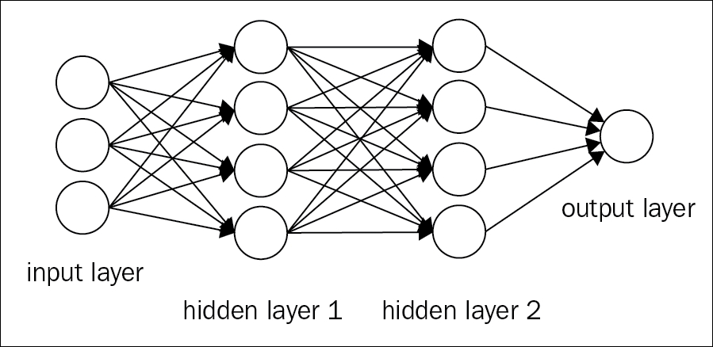
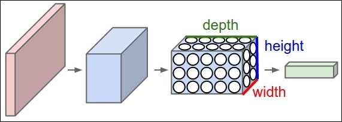

CNN, a particular form of deep learning models, is not a new concept, and they have been widely adopted by the vision community for a long time. The model worked well in recognizing the hand-written digit by LeCun et al in 1998 [90]. But unfortunately, due to the inability of CNNs to work with higher resolution images, its popularity has diminished with the course of time. The reason was mostly due to hardware and memory constraints, and also the lack of availability of large-scale training datasets. As the computational power increases with time, mostly due to the wide availability of CPUs and GPUs and with the generation of big data, various large-scale datasets, such as the MIT Places dataset (see Zhou et al., 2014), ImageNet [91] and so on. it became possible to train larger and complex models. This is initially shown by Krizhevsky et al [4] in their paper, Imagenet classification using deep convolutional neural networks. In that paper, they brought down the error rate with half-beating traditional approaches. Over the next few years, their paper became one of the most substantial papers in the field of computer vision. This popular network trained by Alex Krizhevsky, called AlexNet, could well have been the starting point of using deep networks in the field of computer vision.
We assume that the readers are already familiar with the traditional neural network. In this section, we will look at the general building blocks of CNN.
The traditional neural network receives a single vector as input, and reaches the intermediate states through a series of latent (hidden) layers. Each hidden layer is composed of several neurons, where each neuron is fully connected to every other neuron of the previous layer. The last layer, called the 'output layer', is fully-connected, and it is responsible for the class scores. A regular neural network composed of three layers is shown in Figure 3.2:

Figure 3.2: The figure shows the block diagram of a three-layer regular neural network. The neurons of every layer are fully-connected to every other layer of the previous layer.
Regular neural networks face tremendous challenges while dealing with large-scale images. For example, in the CIFAR-10 RGB database, the dimension of the images are 32x32x3, hence, a single fully-connected neuron in a first hidden layer of the traditional neural network will have 32*32*3= 3072 number of weights. The number of weights, although seems to be reasonable at the outset, would really be a cumbersome task to manage with the increasing number of dimensions. For another RGB image, if the dimension becomes (300x300x3), the total number of weights of the neurons will result in 300*300*3 = 270000 weights. Also, as the number of layers will increase, this number will also increase drastically, and would quickly lead to overfitting. Moreover, visualization of an image completely neglects the complex 2D spatial structure of the image. Therefore, the fully-connected concept of the neural network, right from the initial phase, does not seem to work with the larger dimensional datasets. So, we need to build a model that will overcome both of these limitations:

Figure 3.3: The arrangement of CNN in 3D (width, height, and depth) is represented in the figure. Every layer converts the 3D input volume to the corresponding 3D output volume of neuron activations. The red input layer keeps the image, hence, its width and height would be the dimensions of the image, where the depth would be three (Red, Green, and Blue). Image sourced from Wikipedia.
One way to solve this problem is to use convolution in place of matrix multiplication. Learning from a set of convolutional filters (kernel) is much easier than learning from the whole matrix (300x300x3). Unlike the traditional neural network, the layers of a CNN have their neurons arranged in three dimensions: width, height, and depth. Figure 3.3 shows the representation for this. For example, in the previous example of CIFAR-10, the image has a dimension of 32x32x3, which is width, depth, and height respectively. In a CNN, instead of the neurons in a fully-connected nature, the neurons in a layer will only be connected to a subset of neurons in the previous layer. Details of this will be explained in the subsequent portion of this section. Moreover, the final output layer CIFAR-10 image will have the dimension 1x1x10, because the CNN will diminish the full image into a single vector of class score, placed along with the depth dimension.